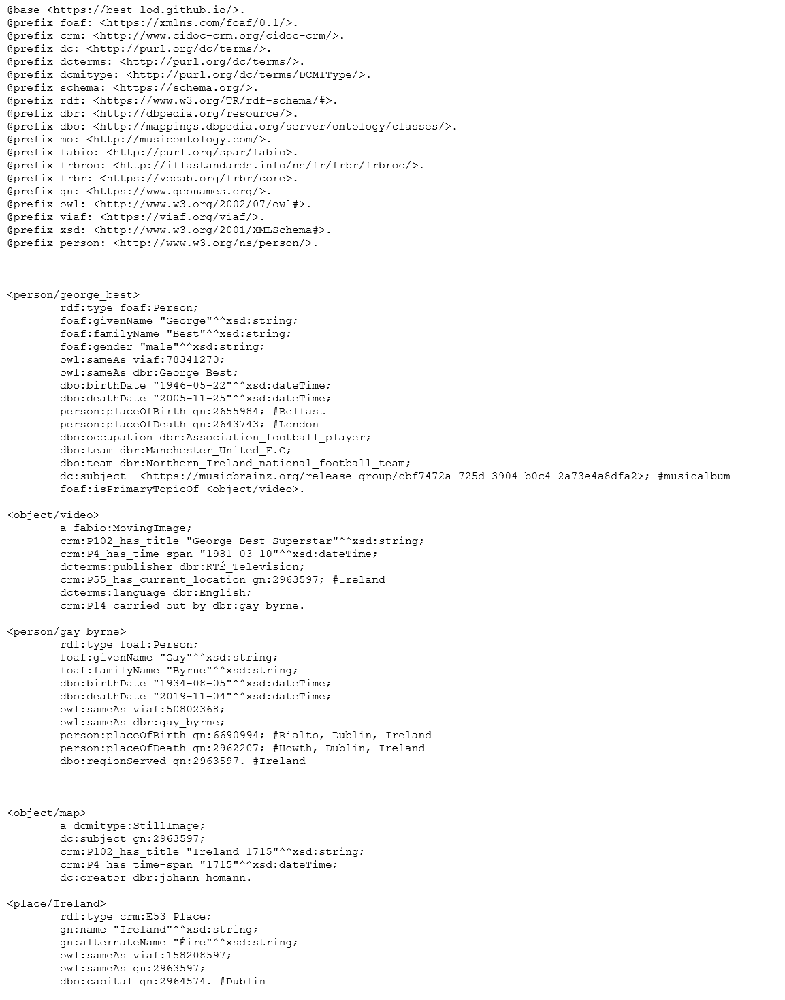
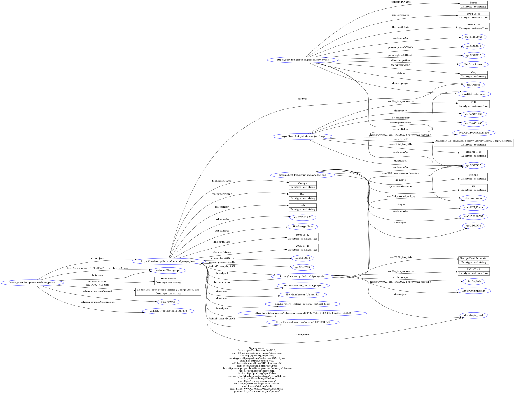

In this step in order to describe items based on the conceptual model that has been created, a table for each item has been created. These tables consist of subject, predicate and object triples. The predicates come from the vocabulary of the selected ontology, the subject and the object are expressed in natural language.
Since the project is person-based and there is no prominent concept, three items that are likely to be related to people, places, and objects were selected for the RDF presentation. These items are the video of the talk show George Best attended, a map of Ireland from the 18th century and a photograph of George Best taken before the Netherlands-Northern Ireland World Cup qualifier. In addition to the URIs created for these items, the URI has been created for George Best, the host of the talk show Gay Byrne and Ireland, and presented in the RDF.
As the last step, visualization is carried out with the RDF grapher tool.
RDF Turtle serialization
RDF visualization
